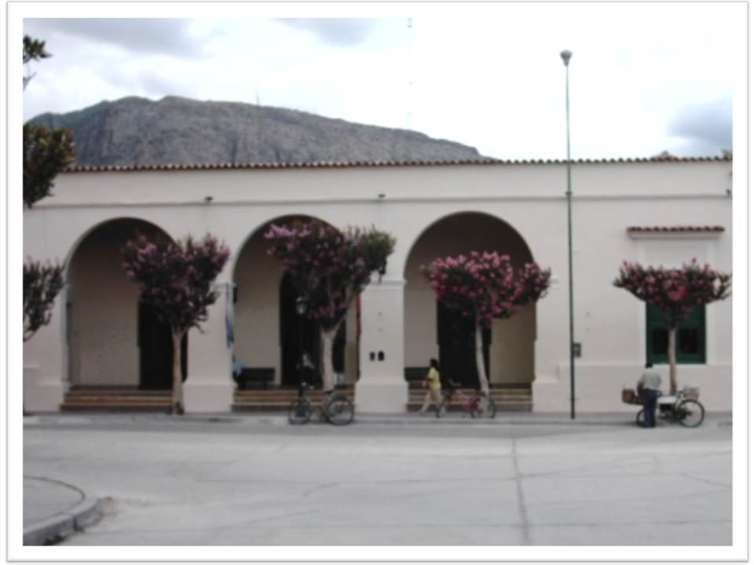
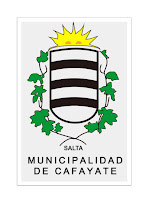
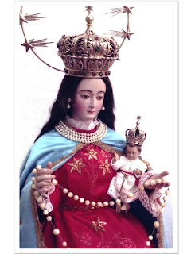
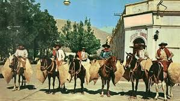
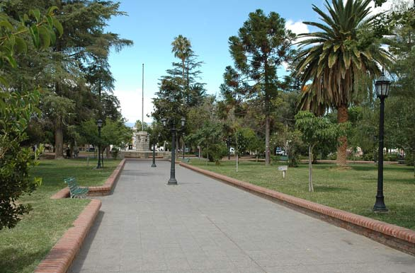

Historia de Cafayate,Salta,Argentina
El origen de Cafayate dataría de 1826, cuando Doña Josefa Antonia Frías de Aramburu donó un terreno de su propiedad, que ya llevaba ese nombre, para la fundación de un pueblo con su iglesia y casa para sus curas. Así lo cuenta la tradición oral que se ha transmitido de generación en generación. El nombre Cafayate ha soportado distintas interpretaciones. Una de ellas asegura que proviene de la lengua quechua significando “Cajón de Agua”; otra expresa que deriva de la voz cacana Capac (Jefe)-Yaco (Agua), significando aproximadamente “Lago del Cacique”. Partiendo de estas dos versiones surge la más aceptada por los lugareños, la cual considera que Capac equivale a riqueza y también a pueblo. De este modo Cafayate es conocido como El Pueblo que lo tiene todo.
La historia del Municipio comienza formalmente y establecido por Ley el 11 de noviembre de 1.863. Creándose el Partido de Cafayate y elevándolo a la categoría de Departamento, con una población de cinco mil habitantes. Don Sigifredo Breacheri fue designado Primer Presidente del Concejo Municipal y Primer Intendente de Cafayate.
En su entrada posee un escudo que es símbolo del Municipio de la Ciudad; el mismo tiene una figura central similar a un arco invertido con franjas negras y plateadas que indicarían surcos de tierra labrada para el cultivo, se cree que es copia del escudo que caracterizaba a la Familia Aramburu. Esta figura central está rodeada por sarmientos de vid con hojas y en una parte superior asomándose el sol con sus rayos símbolo del día, la luz, la claridad, considerado un dios en las tradiciones calchaquíes incaicas (INTI).
A fines de septiembre de cada año el pueblo vallisto se llena de fervor y mística para honrar a su patrona, la Virgen del Rosario, Ella año tras año, recibe el homenaje de todos sus hijos en el “Rosario de la Aurora”, que se va rezando por las antiguas calles que le fueron donadas como herencia. Este acontecimiento religioso lo celebramos durante la novena, desde el día 28 de septiembre al 6 de octubre, sin variar nunca el recorrido. El 7 de octubre se celebra la fiesta religiosa más grande del Valle Calchaquí. El valle se viste de fiesta, hombre, mujeres, niños, jóvenes y ancianos regocijan sus espíritus con oraciones de agradecimientos y ruegos a la que también es considerada “patrona del agro”. Es frecuente la presencia de gente de otros lugares, que llegan a conocer, observar y contagiarse de esta fiesta religiosa que desde 1.742 conmemoran con fervor los vallistos.
Se conformó en 1963 como la Agrupación Tradicionalistas Gauchos de Güemes y actualmente cuenta 45 miembros entre gauchos, gauchas y colaboradores. La agrupación de gauchos Fortín Coronel Santos de Cafayate cumple 60 años desde sus inicio como escuadrón y actualmente continúan sus actividades en los actos de distintas partes de la provincia y ceremonias religiosas. El Fortín Coronel Santos pudo obtener su personería jurídica en 1989 y actualmente brinda clases de folclore gratuitas en su sede de la avenida 25 de mayo.
La Plaza principal de Cafayate, pintoresca, rodeada por las calles San Martín, Güemes, Belgrano y Nuestra Señora del Rosario. La plaza es de forma cuadrangular, cruzada diagonalmente por vistosos senderos y el mástil central divide a la misma en ocho sectores. Se destaca por su prolijidad y arboleda, donde se pueden admirar especies como araucarias, palmeras fénix, pinos y magnolias que la adornan..
